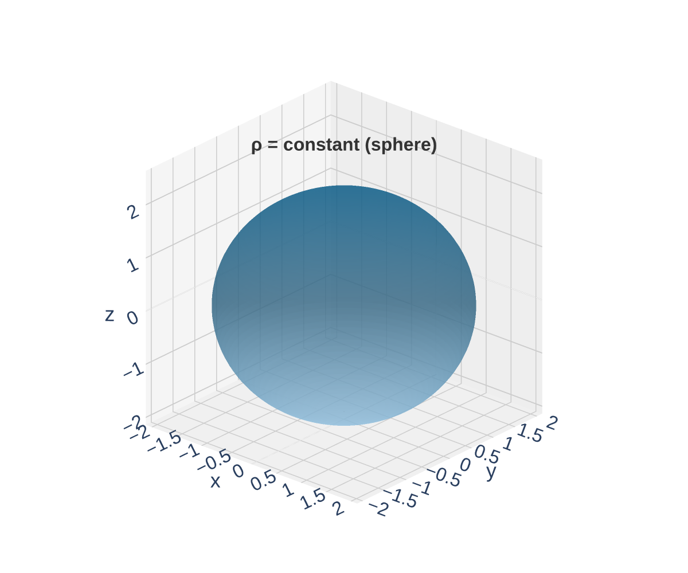
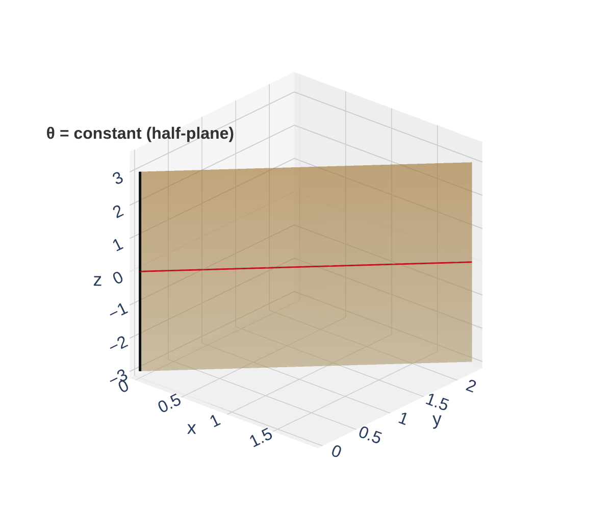
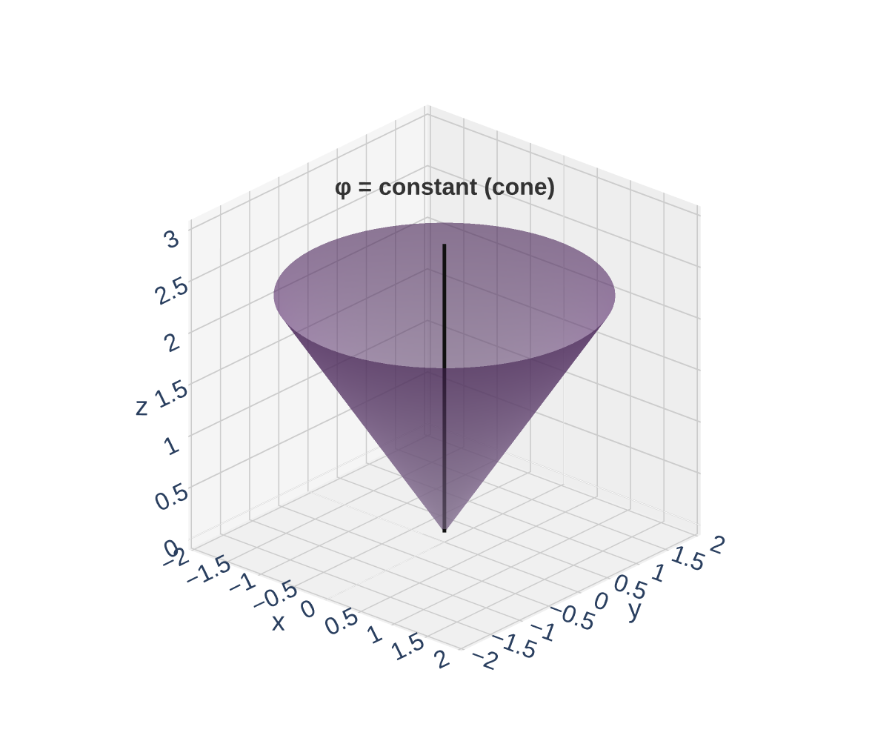
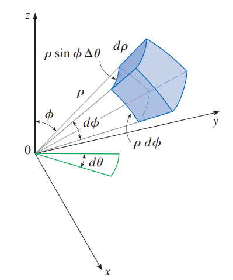
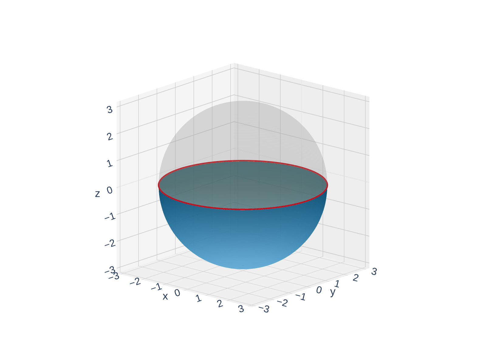
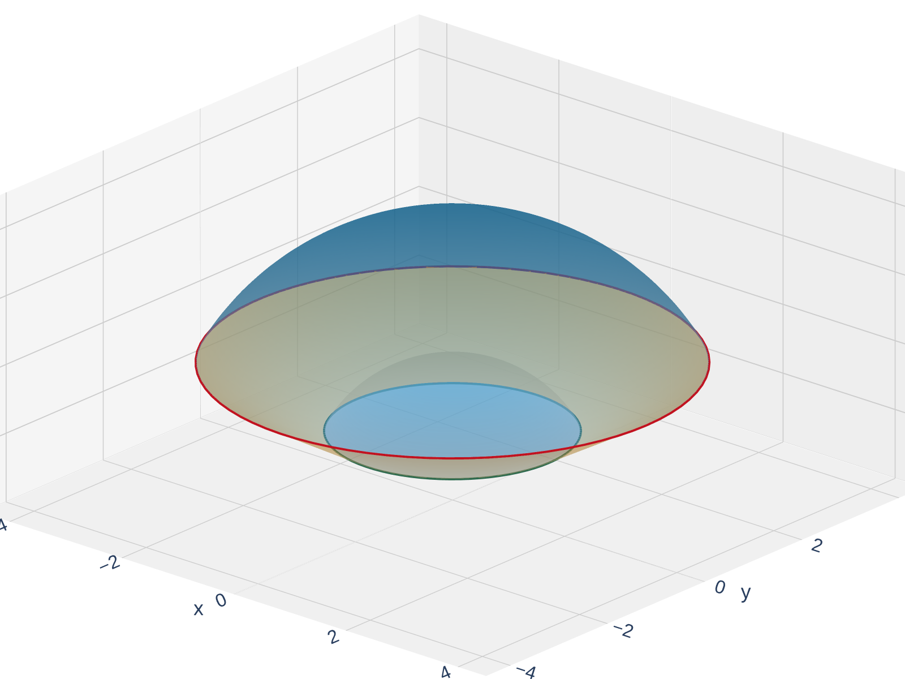

Why Spherical Coordinates?
Cylindrical coordinates handle solids with circular cross-sections in the \(xy\)-plane. But some solids are more naturally described by their distance from the origin:
- Spheres: \(x^2 + y^2 + z^2 = a^2\)
- Cones: \(z = c\sqrt{x^2 + y^2}\)
- Hemispheres, spherical shells, ice-cream-cone regions
In cylindrical coordinates, a sphere is \(r^2 + z^2 = a^2\) — still messy. In spherical coordinates, it becomes simply \(\rho = a\).
Spherical coordinates describe a point by:
- How far it is from the origin (\(\rho\))
- What direction it's in (\(\theta\) and \(\phi\))
Use spherical when the solid or integrand involves \(x^2 + y^2 + z^2\) (distance from origin). Use cylindrical when it involves \(x^2 + y^2\) (distance from the \(z\)-axis).
The Spherical Coordinate System
A point in 3D space is described by \((\rho, \theta, \phi)\) where:
- \(\rho\) = distance from the origin (\(\rho \geq 0\))
- \(\theta\) = angle in the \(xy\)-plane from the positive \(x\)-axis (same as in cylindrical/polar)
- \(\phi\) = angle from the positive \(z\)-axis down to the point (\(0 \leq \phi \leq \pi\))

Important: \(\phi\) is measured from the top (positive \(z\)-axis):
- \(\phi = 0\): pointing straight up (north pole)
- \(\phi = \pi/2\): in the \(xy\)-plane (equator)
- \(\phi = \pi\): pointing straight down (south pole)
\(\rho\) tells you how far, \(\theta\) tells you which compass direction, \(\phi\) tells you how far from vertical. Think of it as GPS coordinates on a sphere: longitude (\(\theta\)) and colatitude (\(\phi\)).
Coordinate Surfaces: What Does Each Constant Look Like?
What surface do you get when you hold one coordinate constant?
| Equation | Surface | Description |
|---|---|---|
| \(\rho = c\) | Sphere | Centered at origin, radius \(c\) |
| \(\theta = c\) | Half-plane | Vertical, hinged on the \(z\)-axis |
| \(\phi = c\) | Cone | Half-cone opening from the \(z\)-axis |
Some important special cases for \(\phi\):
- \(\phi = 0\): the positive \(z\)-axis (a degenerate “cone” — just a ray)
- \(\phi = \pi/4\): a cone at 45 degrees from vertical
- \(\phi = \pi/2\): the \(xy\)-plane (the “widest” cone — a flat disk)
- \(\phi = \pi\): the negative \(z\)-axis



\(\rho = \) const gives a sphere, \(\theta = \) const gives a half-plane, \(\phi = \) const gives a cone. These are the building blocks for spherical regions.
Conversion Formulas
Spherical to Cartesian:
\[x = \rho\sin\phi\cos\theta, \qquad y = \rho\sin\phi\sin\theta, \qquad z = \rho\cos\phi\]
Cartesian to Spherical:
\[\rho^2 = x^2 + y^2 + z^2, \qquad \tan\theta = \frac{y}{x}, \qquad \cos\phi = \frac{z}{\rho}\]
Useful relationship to cylindrical:
\[r = \rho\sin\phi, \qquad z = \rho\cos\phi\]
This makes sense: the projection of \(\rho\) onto the \(xy\)-plane is \(\rho\sin\phi\) (the cylindrical \(r\)), and the vertical component is \(\rho\cos\phi\) (the height \(z\)).
Common conversions:
| Cartesian | Spherical | Surface |
|---|---|---|
| \(x^2 + y^2 + z^2 = 16\) | \(\rho = 4\) | Sphere of radius 4 |
| \(z = \sqrt{x^2 + y^2}\) | \(\phi = \pi/4\) | Cone at 45 degrees |
| \(z = 0\) | \(\phi = \pi/2\) | The \(xy\)-plane |
| \(x^2 + y^2 + z^2 = 2z\) | \(\rho = 2\cos\phi\) | Sphere tangent to origin |
The master identity is \(\rho^2 = x^2 + y^2 + z^2\). For cones \(z = c\sqrt{x^2+y^2}\), divide both sides by \(\rho\) to get \(\cos\phi = c\sin\phi\), i.e., \(\phi = \arctan(1/c)\).
Quick Check: Convert Equations to Spherical
Write each equation in spherical coordinates:
- \(x^2 + y^2 + z^2 = 16\)
- \(z = \sqrt{x^2 + y^2}\)
For (1), use \(\rho^2 = x^2+y^2+z^2\). For (2), write in terms of \(\rho\), \(\phi\) and simplify.
(1) \(\rho^2 = 16 \Rightarrow \rho = 4\). That's it — a sphere of radius 4.
(2) \(z = \sqrt{x^2+y^2}\) means \(\rho\cos\phi = \rho\sin\phi\) (since \(r = \rho\sin\phi\)).
Dividing by \(\rho\): \(\cos\phi = \sin\phi\), so \(\tan\phi = 1\), giving \(\phi = \pi/4\).
This is a cone making a 45-degree angle with the \(z\)-axis.
Spheres become \(\rho = \) const. Cones become \(\phi = \) const. That's the power of spherical coordinates.
The Volume Element in Spherical Coordinates
In Cartesian, \(dV = dx\,dy\,dz\). In cylindrical, \(dV = r\,dz\,dr\,d\theta\). What about spherical?
A small “spherical wedge” at position \((\rho, \theta, \phi)\) has three edge lengths:
- Radial: \(d\rho\)
- Longitudinal arc: \(\rho\sin\phi\,d\theta\) (circle of radius \(\rho\sin\phi\) in the \(xy\)-plane)
- Latitudinal arc: \(\rho\,d\phi\) (arc along a meridian)
The volume of this wedge is the product of the three edge lengths:
\[\boxed{dV = \rho^2\sin\phi\,d\rho\,d\phi\,d\theta}\]

The magnification factor \(\rho^2\sin\phi\) accounts for the stretching of the coordinate grid. It's the price of using curved coordinates — but it's worth it when the limits become simple constants.
Quick Check: Describe the Region
What solid does the following region describe?
\[0 \leq \rho \leq 3, \qquad 0 \leq \phi \leq \pi/2, \qquad 0 \leq \theta \leq 2\pi\]
Think about each limit: what does \(\rho \leq 3\) mean? What does \(\phi \leq \pi/2\) restrict? What does \(\theta\) from \(0\) to \(2\pi\) mean?
\(\rho \leq 3\): inside a sphere of radius 3.
\(\phi \leq \pi/2\): above the \(xy\)-plane (since \(\phi = \pi/2\) is the equator).
\(\theta\) from \(0\) to \(2\pi\): full revolution.
The region is the upper hemisphere of a ball of radius 3 (a solid half-ball, not just the surface).
\(\phi \in [0, \pi/2]\) means “above the \(xy\)-plane.” \(\phi \in [\pi/2, \pi]\) means “below the \(xy\)-plane.”
When to Use Spherical Coordinates
Use spherical when:
- The region is bounded by spheres (\(\rho = a\)) and/or cones (\(\phi = c\))
- The integrand involves \(x^2 + y^2 + z^2\) (becomes \(\rho^2\))
- The solid is a full ball, hemisphere, spherical shell, or “ice-cream cone” shape
Template:
\[\iiint_E f\,dV = \int_{\alpha}^{\beta}\int_{\phi_1}^{\phi_2}\int_{\rho_1(\theta,\phi)}^{\rho_2(\theta,\phi)} f(\rho\sin\phi\cos\theta,\, \rho\sin\phi\sin\theta,\, \rho\cos\phi)\;\rho^2\sin\phi\,d\rho\,d\phi\,d\theta\]
Typical order: \(d\rho\,d\phi\,d\theta\). The \(\rho\)-integral is innermost (simplest limits), and \(\theta\) is outermost (usually \(0\) to \(2\pi\)).
The decision tree: circles in \(xy\)-plane? \(\to\) cylindrical. Spheres or cones from origin? \(\to\) spherical. Neither? \(\to\) Cartesian.
Example 1: Integral Over a Lower Hemisphere
Evaluate \(\displaystyle\iiint_H (9 - x^2 - y^2)\,dV\), where \(H\) is the solid lower hemisphere \(x^2 + y^2 + z^2 \leq 9\), \(z \leq 0\).
Convert to spherical. What are the limits on \(\rho\), \(\phi\), \(\theta\)? Remember \(x^2+y^2 = \rho^2\sin^2\phi\) and \(dV = \rho^2\sin\phi\,d\rho\,d\phi\,d\theta\).
Convert everything to spherical:
- \(9 - x^2 - y^2 = 9 - \rho^2\sin^2\phi\) (since \(x^2 + y^2 = \rho^2\sin^2\phi\))
- Sphere: \(\rho = 3\)
- Lower hemisphere (\(z \leq 0\)): \(\phi \in [\pi/2, \pi]\)

\[\iiint_H (9 - x^2 - y^2)\,dV = \int_0^{2\pi}\int_{\pi/2}^{\pi}\int_0^{3} (9 - \rho^2\sin^2\phi)\,\rho^2\sin\phi\,d\rho\,d\phi\,d\theta\]
Expand the integrand:
\[(9 - \rho^2\sin^2\phi)\,\rho^2\sin\phi = 9\rho^2\sin\phi - \rho^4\sin^3\phi\]
Example 1: Integral Over a Lower Hemisphere
Evaluate the \(\rho\)-integral:
\[\int_0^{3}(9\rho^2\sin\phi - \rho^4\sin^3\phi)\,d\rho = \sin\phi\left[9\cdot\frac{\rho^3}{3}\right]_0^3 - \sin^3\phi\left[\frac{\rho^5}{5}\right]_0^3\]
\[= \sin\phi\cdot 81 - \sin^3\phi\cdot\frac{243}{5} = 81\sin\phi - \frac{243}{5}\sin^3\phi\]
Evaluate the \(\phi\)-integral (over \([\pi/2, \pi]\)):
\[\int_{\pi/2}^{\pi}\left(81\sin\phi - \frac{243}{5}\sin^3\phi\right)d\phi\]
For \(\int\sin\phi\,d\phi = -\cos\phi\). For \(\int\sin^3\phi\,d\phi\), write \(\sin^3\phi = \sin\phi(1-\cos^2\phi)\):
\[\int\sin^3\phi\,d\phi = -\cos\phi + \frac{\cos^3\phi}{3}\]
\[= \left[-81\cos\phi + \frac{243}{5}\cos\phi - \frac{243}{15}\cos^3\phi\right]_{\pi/2}^{\pi}\]
At \(\phi = \pi\): \(\cos\pi = -1\), so \(= 81 - \frac{243}{5} + \frac{243}{15} = 81 - \frac{243}{5} + \frac{81}{5} = 81 - \frac{162}{5} = \frac{243}{5}\).
At \(\phi = \pi/2\): \(\cos(\pi/2) = 0\), so \(= 0\).
\[\phi\text{-integral} = \frac{243}{5}\]
Outer integral: \(\displaystyle\int_0^{2\pi} \frac{243}{5}\,d\theta = \frac{243}{5}\cdot 2\pi = \frac{486\pi}{5}\)
\(\displaystyle\iiint_H (9 - x^2 - y^2)\,dV = \frac{486\pi}{5}\). The spherical limits (\(\rho \in [0,3]\), \(\phi \in [\pi/2,\pi]\), \(\theta \in [0,2\pi]\)) were all constants — that's the payoff.
Example 2: Between Spheres, Above a Cone
Evaluate \(\displaystyle\iiint_E xyz\,dV\), where \(E\) lies between the spheres \(\rho = 2\) and \(\rho = 4\), and above the cone \(\phi = \pi/3\).
Convert \(xyz\) to spherical coordinates and set up the integral. What are the limits on \(\rho\), \(\phi\), \(\theta\)?
Identify the region: A spherical shell (\(2 \leq \rho \leq 4\)) cut by a cone (\(\phi \leq \pi/3\)) — like the top of an ice-cream cone.

Convert the integrand:
\[xyz = (\rho\sin\phi\cos\theta)(\rho\sin\phi\sin\theta)(\rho\cos\phi) = \rho^3\sin^2\phi\cos\phi\cos\theta\sin\theta\]
Using \(\cos\theta\sin\theta = \frac{1}{2}\sin 2\theta\):
\[xyz = \frac{\rho^3}{2}\sin^2\phi\cos\phi\sin 2\theta\]
Limits: \(\rho \in [2, 4]\), \(\phi \in [0, \pi/3]\), \(\theta \in [0, 2\pi]\).
\[\iiint_E xyz\,dV = \int_0^{2\pi}\int_0^{\pi/3}\int_2^4 \frac{\rho^3}{2}\sin^2\phi\cos\phi\sin 2\theta \cdot \rho^2\sin\phi\,d\rho\,d\phi\,d\theta\]
\[= \frac{1}{2}\int_0^{2\pi}\sin 2\theta\,d\theta \cdot \int_0^{\pi/3}\sin^3\phi\cos\phi\,d\phi \cdot \int_2^4 \rho^5\,d\rho\]
Example 2: Between Spheres, Above a Cone
Key observation: The integral separates into a product of three single-variable integrals!
The \(\theta\)-integral:
\[\int_0^{2\pi}\sin 2\theta\,d\theta = \left[-\frac{\cos 2\theta}{2}\right]_0^{2\pi} = -\frac{1}{2} + \frac{1}{2} = 0\]
Stop! The entire triple integral equals zero.
\[\iiint_E xyz\,dV = \frac{1}{2} \cdot 0 \cdot (\text{anything}) \cdot (\text{anything}) = 0\]
Why? The function \(xyz\) is odd in the sense that for every point \((x,y,z)\) in \(E\) contributing a positive value, the point \((-x,-y,z)\) (which is also in \(E\), obtained by rotating 180 degrees) contributes the same negative value. They cancel perfectly.
\(\displaystyle\iiint_E xyz\,dV = 0\). Always check the \(\theta\)-integral first — if \(\sin\theta\), \(\cos\theta\), \(\sin 2\theta\), etc. integrate to zero over a full period, you're done!
Choosing the Right Coordinate System
After Chapters 15.6–15.8, you have three coordinate systems for triple integrals. How do you choose?
| Coordinate System | Best When | Volume Element |
|---|---|---|
| Cartesian \((x,y,z)\) | Rectangular solids, no obvious symmetry | \(dV = dx\,dy\,dz\) |
| Cylindrical \((r,\theta,z)\) | Circular symmetry about the \(z\)-axis: cylinders, paraboloids, cones | \(dV = r\,dz\,dr\,d\theta\) |
| Spherical \((\rho,\theta,\phi)\) | Symmetry about the origin: spheres, cones from origin | \(dV = \rho^2\sin\phi\,d\rho\,d\phi\,d\theta\) |
Quick decision guide:
- See \(x^2 + y^2\) in the region or integrand? \(\to\) Cylindrical
- See \(x^2 + y^2 + z^2\) in the region or integrand? \(\to\) Spherical
- Region described by planes only? \(\to\) Cartesian
- Sphere + cone? \(\to\) Spherical (both become constants)
- Cylinder + horizontal planes? \(\to\) Cylindrical
The “right” coordinate system is the one that makes the limits of integration simplest. If the boundaries become constants, you've found the right system.
Section 15.8 Summary
\((\rho, \theta, \phi)\): \(\rho\) = distance from origin, \(\theta\) = angle in \(xy\)-plane, \(\phi\) = angle from positive \(z\)-axis.
\(x = \rho\sin\phi\cos\theta\), \(y = \rho\sin\phi\sin\theta\), \(z = \rho\cos\phi\), \(\rho^2 = x^2+y^2+z^2\).
\(dV = \rho^2\sin\phi\,d\rho\,d\phi\,d\theta\). The factor \(\rho^2\sin\phi\) accounts for the stretching of the curved grid.
Spheres (\(\rho = a\)), cones (\(\phi = c\)), and integrands involving \(x^2+y^2+z^2\).
Single \(\to\) double \(\to\) triple integrals. Cartesian \(\to\) polar \(\to\) cylindrical \(\to\) spherical. Choose the coordinate system that makes the limits simplest.
Coming up next: Chapter 16 — Vector Calculus! We'll integrate vector fields along curves and across surfaces. The ideas from Chapter 15 (changing coordinates, setting up limits) will be essential tools.
Homework
Section 15.8
1, 3, 5, 6, 7, 9, 11, 15, 17, 19, 20, 23, 25, 27, 29, 31, 37, 43, 50